Relief in poselitev
Ravnine na Nizozemskem in SZ Belgije so zelo gosto poseljene; Ardeni in sever Luksemburga so bolj hriboviti in redkeje poseljeni.
Učenje
Atlantska, visoko razvita Evropa: naravne enote, oceansko podnebje, industrializacija, Beneluks, Velika Britanija in Irska.
Zahodna Evropa ni isto kot zahodni del Evrope ali evropski zahod. V šolski snovi pomeni geografsko enoto sedmih visoko razvitih držav ob Atlantskem oceanu z večinoma oceanskim podnebjem.
| Država | Glavno mesto |
|---|---|
| Irska | Dublin |
| Velika Britanija | London |
| Belgija | Bruselj |
| Nizozemska | Amsterdam; parlament in vlada v Haagu |
| Luksemburg | Luksemburg |
| Francija | Pariz |
| Monako | Monako |


| Naravne enote | Primeri |
|---|---|
| gorovja | Pireneji, Alpe |
| sredogorja | Škotsko višavje, Kambrijsko hribovje, Penini, Vogezi, Ardeni, Centralni masiv |
| kotline | Pariška in Londonska kotlina |
| prelivi | Rokavski preliv, Dovrska vrata |
| reke | Temza, Ren, Loara, Sena, Rona |
| morje | Severno morje - robno morje |
Površje Zahodne Evrope je preplet starih sredogorij, grudastih gorstev, mladonagubanih gorstev, kotlin in nižin. Največji del površja zavzemajo nižine in kotline, najbolj nižinska država pa je Nizozemska.
| Zgradbena enota | Primeri | Orogeneza / nastanek |
|---|---|---|
| staronagubana gorstva | Škotsko višavje, Penini, Kambrijsko hribovje | kaledonska orogeneza, starejši paleozoik |
| grudasta gorstva | Vogezi, Ardeni, Centralni masiv | hercinska orogeneza, nato razlamljanje ob prelomih |
| mladonagubana gorstva | Alpe, Pireneji | alpidska orogeneza v terciarju |
| kotline | Pariška, Londonska | tektonsko grezanje med dvigovanjem okoliških območij |
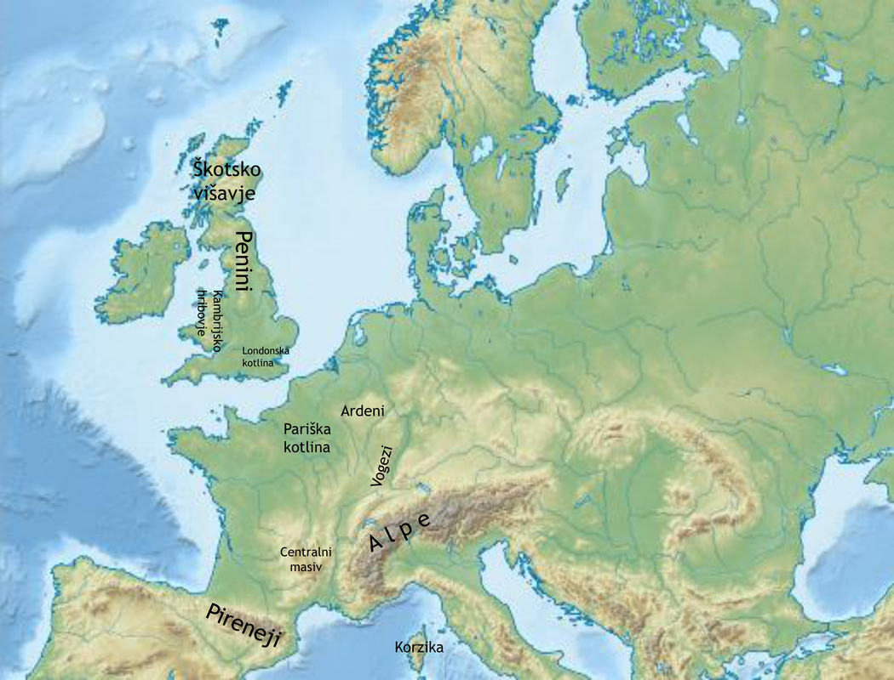
Glavni podnebni dejavnik je topli Severnoatlantski tok. Pomembni so tudi islandski minimum, stalni zahodni vetrovi in relief, ki povzroča orografske padavine. Oceansko podnebje ima sveža poletja, mile zime, majhne letne temperaturne amplitude in padavine skozi vse leto.
| Tip podnebja | Rastlinstvo / prsti | Značilnosti |
|---|---|---|
| oceansko / atlantsko | listnati gozdovi, travniki, kambisoli | milo, vlažno, zelena Evropa |
| sredozemsko | sredozemsko rastlinstvo, kambisoli in rdeče prsti | južnejši deli, več poletne suše |
| kontinentalno vlažno | listnati in mešani gozdovi | notranjost |
| gorsko | gorsko rastlinstvo in gorske prsti | Alpe, Pireneji |
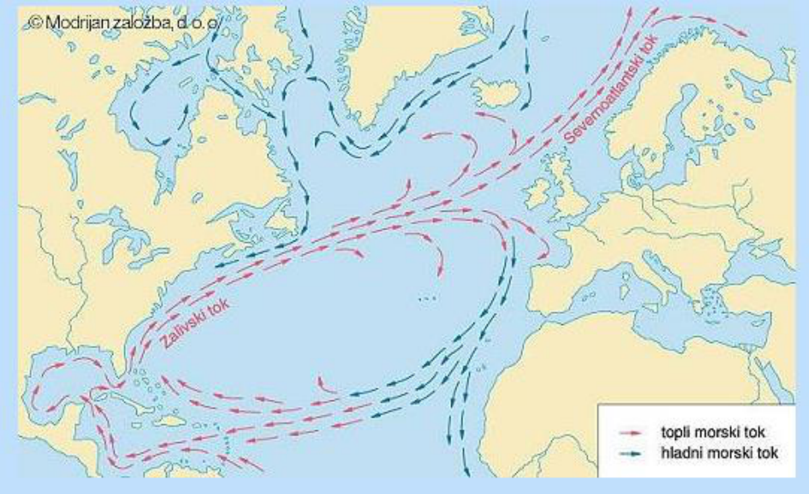
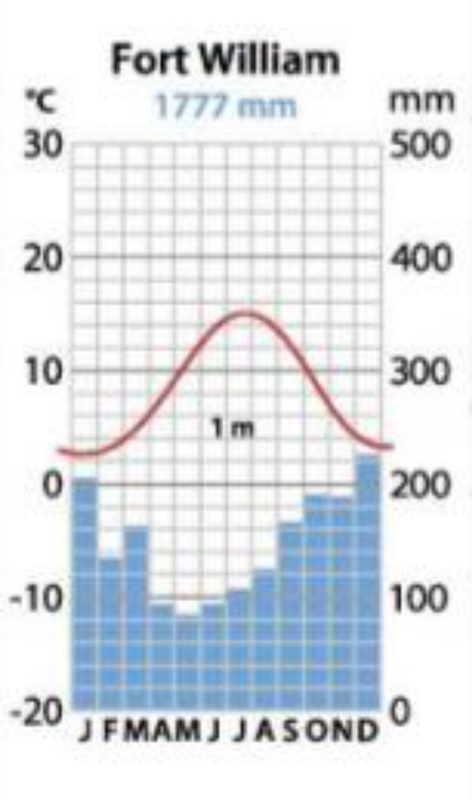
Zahodna Evropa ima zelo dobre možnosti za različne tipe kmetijstva zaradi ravnega ali rahlo valovitega površja, primernega za mehanizacijo, ter oceanskega podnebja z malo zmrzali in zgodnjo vegetacijsko dobo. Pomembni so intenzivno žitno poljedelstvo, intenzivna mesna in mlečna živinoreja, vinogradništvo, sredozemsko kmetijstvo in zelo razvito nizozemsko kmetijstvo. Francija je kmetijska velesila po količini pridelave, zlasti pri pšenici, siru in vinu.
Kmetijska revolucija v Veliki Britaniji v 18. stoletju je povečala pridelavo, modernizirala kmetijstvo in sprostila delovno silo. Industrijska revolucija se je začela v Angliji v 18. stoletju kot prehod iz ročne v strojno proizvodnjo.
| Proces | Pomen |
|---|---|
| kmetijska revolucija | več pridelave, ograjevanje skupnih zemljišč, sprostitev delovne sile |
| industrijska revolucija | parni stroj, stroji, tehnološke in družbene spremembe |
| industrializacija | dolgotrajno uvajanje teh sprememb v gospodarstvo |
| kolonializem | kolonije kot vir surovin in tržišče za izdelke; vpliv na migracije in multikulturnost |
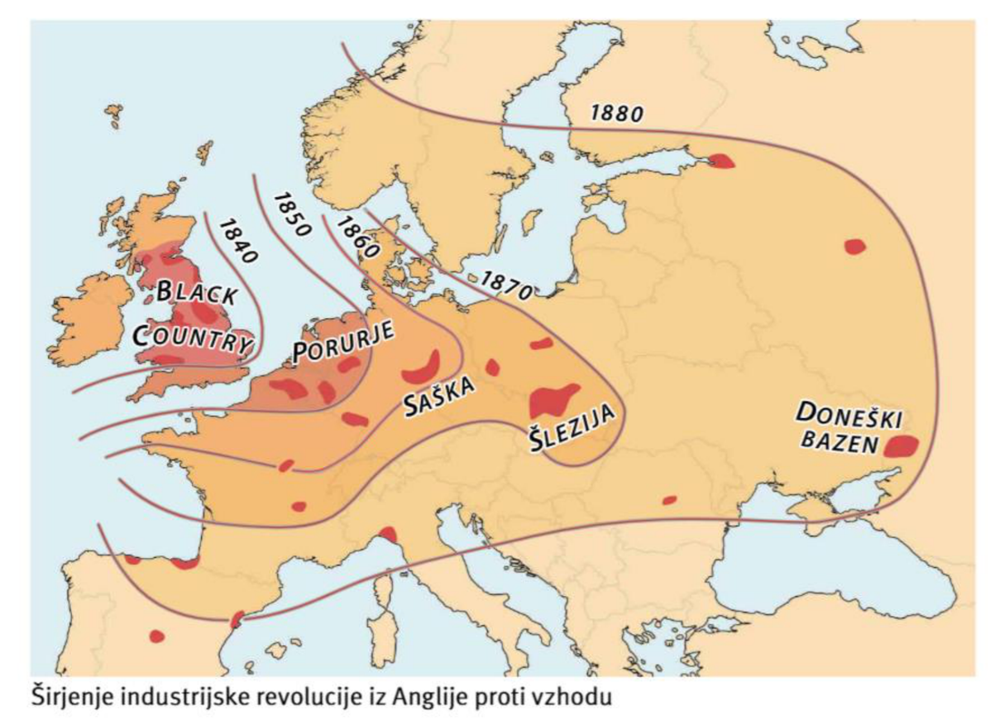
Glavne industrijske pokrajine, nastale z industrializacijo: Black Country, Porurje, Saška, Šlezija in Doneški bazen. Posledica je bila tudi degradacija okolja.
| Pojem | Pomen |
|---|---|
| Britansko otočje | Velika Britanija + Irska + številni manjši otoki |
| Združeno kraljestvo Velike Britanije in Severne Irske | država, sestavljena iz Anglije, Walesa, Škotske in Severne Irske |
| Združeno kraljestvo | uradno skrajšano ime države |
| Velika Britanija | v vsakdanji rabi poimenovanje države; geografsko pa tudi ime velikega otoka |

Velika Britanija je bila svetovna začetnica industrializacije, zato se je zgodaj urbanizirala. Po letu 1960 je sledilo zapuščanje mest in suburbanizacija. Po 2. svetovni vojni so proces omejevali z zelenimi pasovi, nezazidljivimi obroči okoli mest, ki preprečujejo širjenje in spajanje mest, imajo pa tudi rekreativno in okoljsko funkcijo.
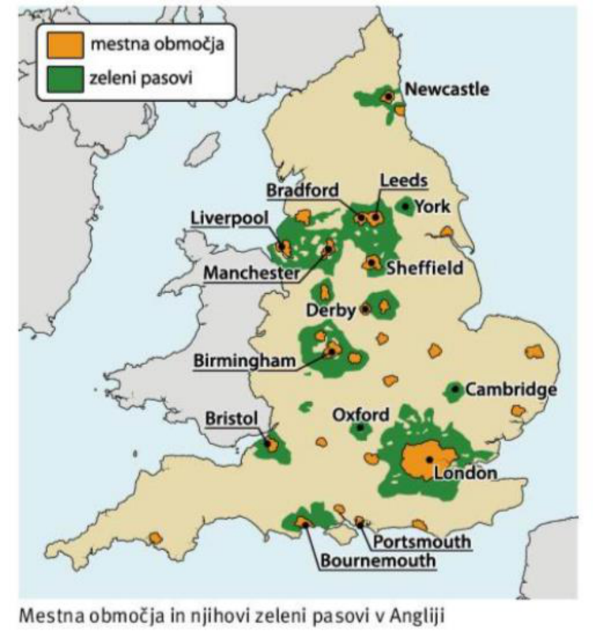
V drugi polovici 20. stoletja je v Veliki Britaniji prišlo do deindustrializacije: zaton tekstilne industrije, ladjedelništva, jeklarstva in težke industrije ter razvoj novih panog, farmacije, visoke tehnologije in storitev.
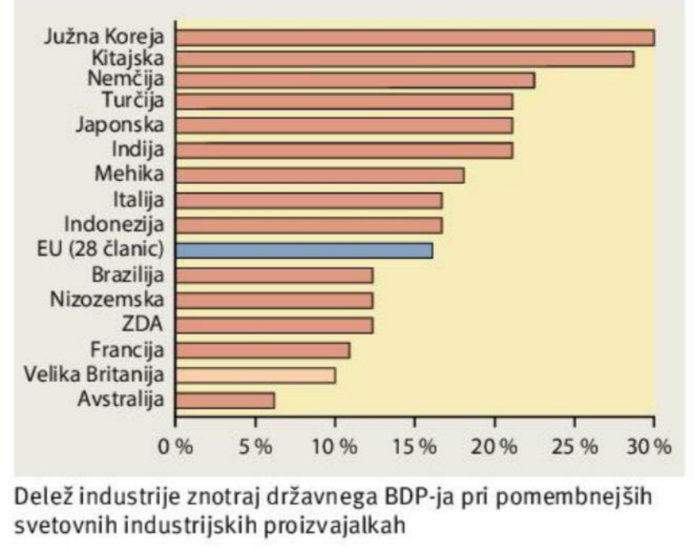
Velika lakota 1845-1850 je povzročila približno milijon smrti in množično izseljevanje. Obdobje keltskega tigra 1995-2007 je Irsko iz revnejše kmetijske države spremenilo v eno gospodarsko najuspešnejših držav EU. Po letu 2008 je sledila finančna kriza, pozneje pa ponovna rast in priseljevanje.
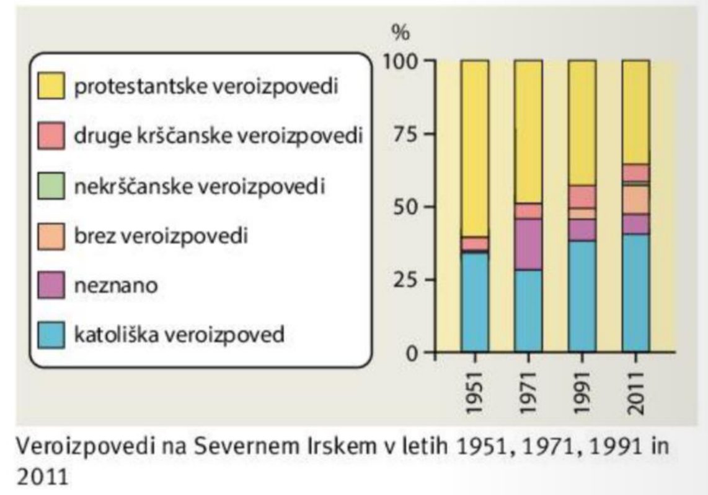
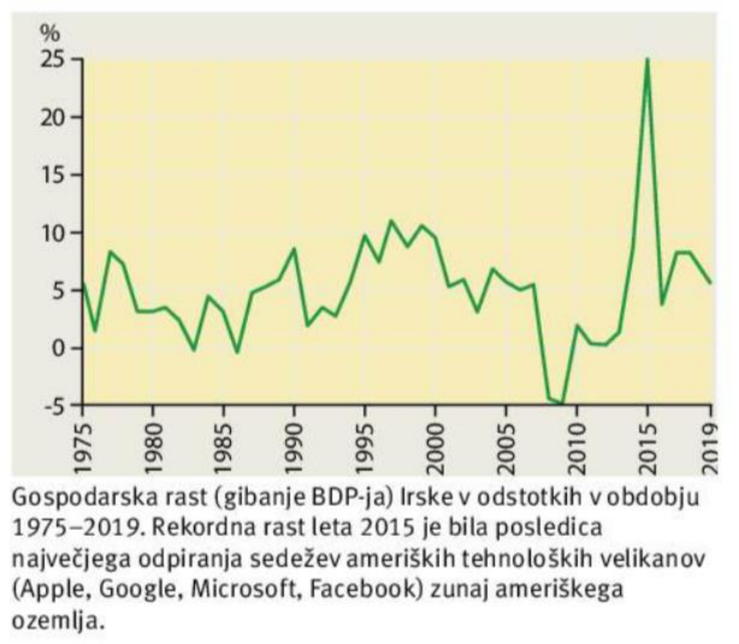
Beneluks je politično-gospodarska unija Belgije, Nizozemske in Luksemburga.

Ravnine na Nizozemskem in SZ Belgije so zelo gosto poseljene; Ardeni in sever Luksemburga so bolj hriboviti in redkeje poseljeni.
Pridobljena zemljišča; danes je približno četrtina Nizozemske niže od morske gladine.
Delta Rena, Maasa in Šelde, plima, viharni valovi in dvigovanje morske gladine.
Visoko razvito, mehanizirano, inovativno; pomembni tržno vrtnarstvo, čebulnice, sadike in mlečna živinoreja.
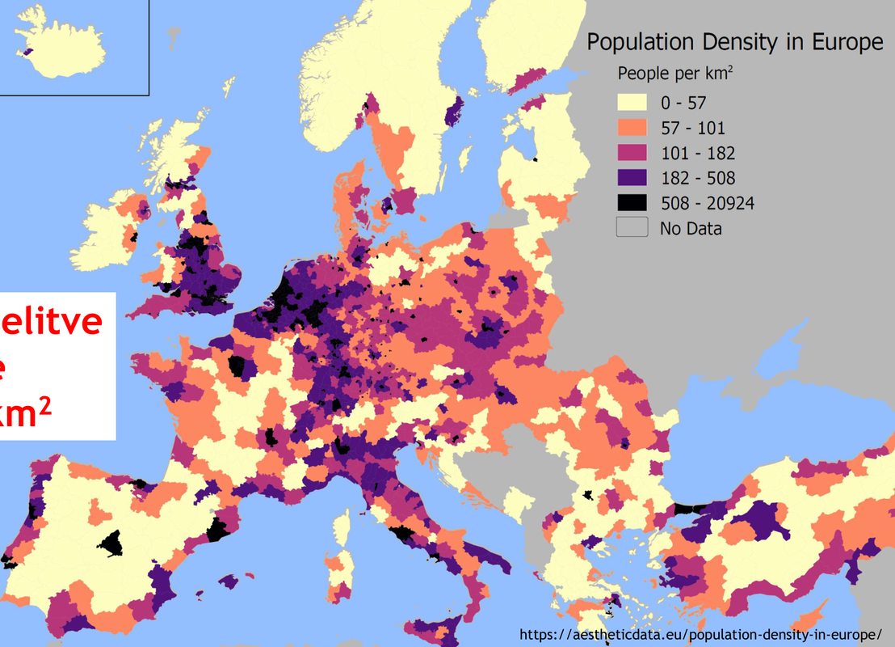
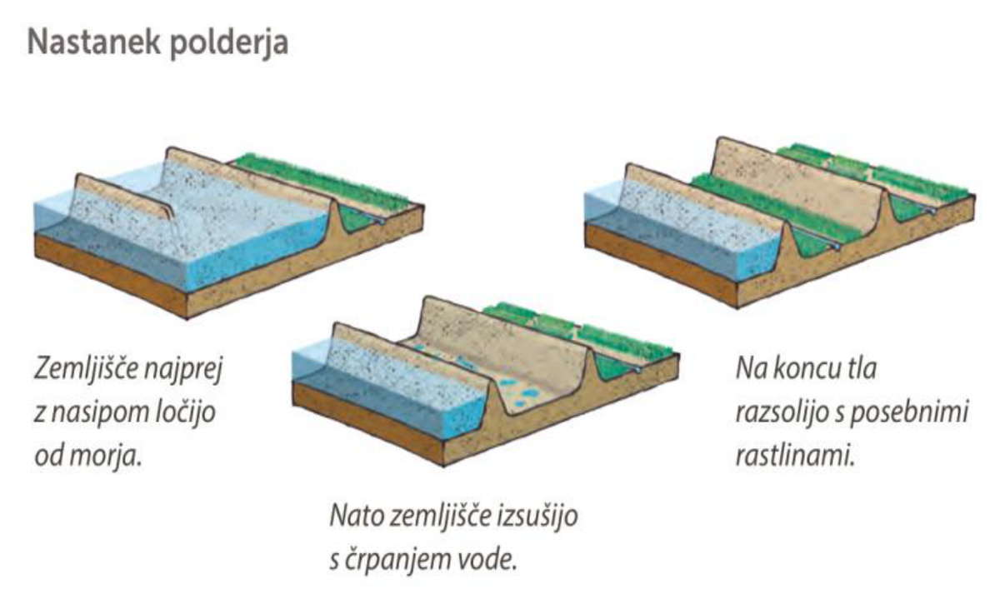
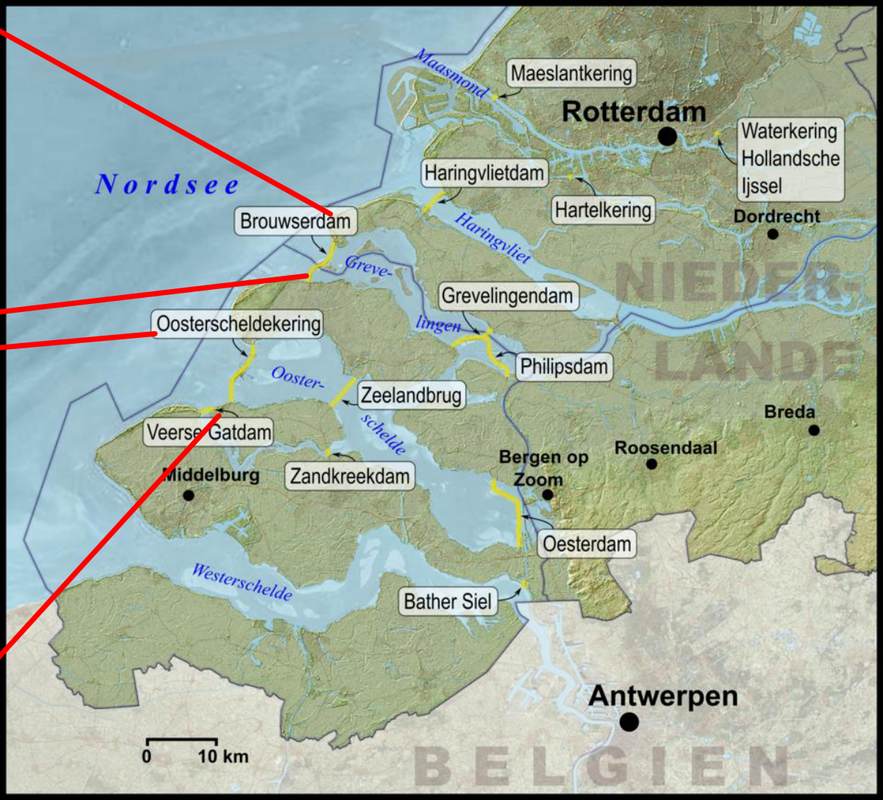
Rotterdam je največje pristanišče v Evropi po obsegu pretovora. Randstad Holland je konurbacija Amsterdam - Haag - Rotterdam - Utrecht, z zelenim srcem v notranjosti.
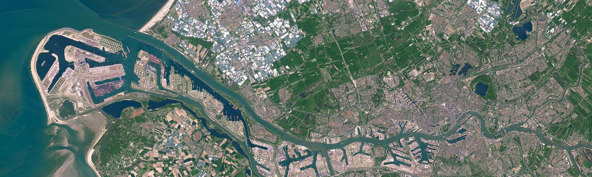
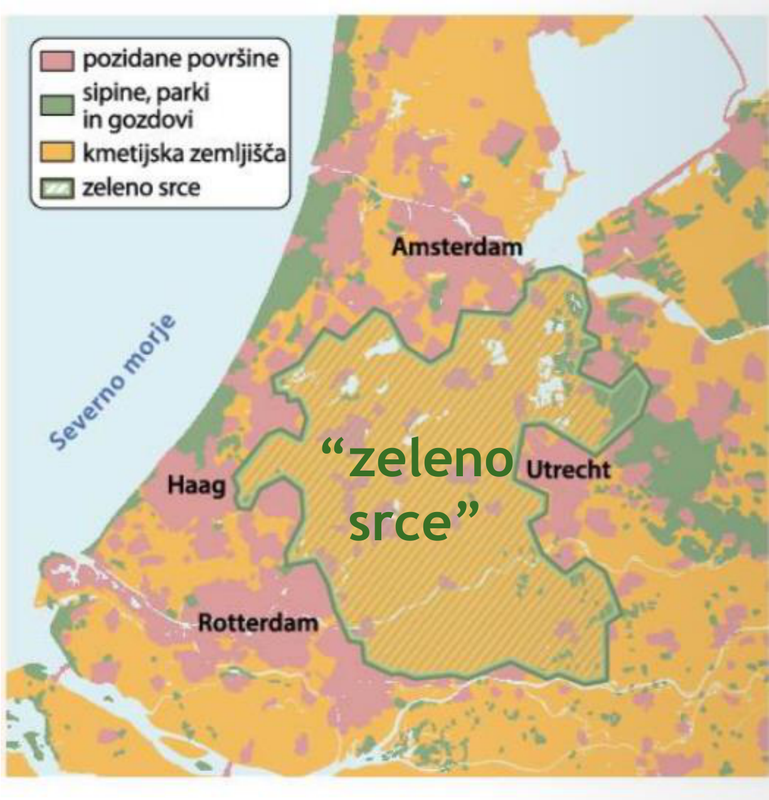
Belgija je jezikovno razdeljena: Flandrija na severozahodu je nizozemsko govoreča, Valonija na jugovzhodu francosko govoreča, Bruselj je dvojezičen. Zaradi sporov so državo preoblikovali v zvezno državo z velikimi pristojnostmi regij.
Zakaj je Zahodna Evropa pod močnim oceanskim vplivom?
Zahodna Evropa leži ob Atlantskem oceanu. Topli Severnoatlantski tok in stalni zahodni vetrovi prinašajo vlažen in mil zrak, zato ima območje mile zime, sveža poletja in padavine skozi vse leto.
Pojasni pomen polderjev in projekta Delta za Nizozemsko.
Polderji so izsušena zemljišča, ki so Nizozemski omogočila nova območja za kmetijstvo in poselitev, vendar del površja leži pod morsko gladino. Projekt Delta je sistem nasipov in zapornic, ki zmanjšuje poplavno ogroženost v delti Rena, Maasa in Šelde.
Atlantski ocean ne vpliva le na podnebje, ampak tudi na promet, pristanišča, kolonialno širitev in zgodnjo vključitev v svetovno trgovino.
Zahodna Evropa je imela premog, železovo rudo, pristanišča, kapital, kolonije in železnice. Zato je industrializacija najprej ustvarila industrijske pokrajine, pozneje pa deindustrializacijo in razvoj storitev.
Nizozemska je primer države, kjer relief in voda neposredno vplivata na družbeni razvoj: polderji, Projekt Delta, Rotterdam in Randstad kažejo povezavo med naravo, prometom, poselitvijo in gospodarstvom.
Pri Zahodni Evropi je uporabna razlaga v časovnem zaporedju: atlantska lega → kolonializem in trgovina → industrializacija → urbanizacija → deindustrializacija → storitveno gospodarstvo.
Viri dopolnitve: Encyclopaedia Britannica, Eurostat, uradne strani EU.
Klikni kartico, da obrneš odgovor. Te kartice so dodane neposredno na konec teme za hitro ponavljanje.
Osnovna snov je povzeta iz predstavitev 031-035. Dopolnitve razlagajo povezave med oceanskim podnebjem, kmetijstvom, industrializacijo in deindustrializacijo. Dopolnitve so označene kot "Dodano za razumevanje" in so povzete iz preverjenih virov: Eurostat, European Environment Agency, Encyclopaedia Britannica, uradne strani EU in drugi preverjeni viri.